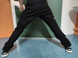

sqrt(-1)/0
- "principe mafia sicilienne"
- "le plan c'est de tuer le plus de gens possible"
- "trop de chimie ça atteint le cerveau"
- "vous avez pas calculé un discriminant j'espère??"
- "le truc qui tue"
- "c'est la fin, explosion de l'univers"
- "on voudrait pas tuer un chaton"
- "grosse astuce de malade"
- "plus truc, moins truc"
- "ça va les maternelles?"
- "tu veux bien effacer avec une brosse parce que là c'est le Verdun"
- "c'est pas parce que je suis un psychopathe, même si c'est vrai"
- "moi je suis près à vous enlever des points jusqu'au 30 juin"
- "raisonnement à la vosgienne", un vosgien ("c'est pas drôle"), "oh tient j'entends un vosgien"
- "vous êtes des grands maintenant"
- "erreur qui vaut moins l'infini"
- "une astuce qui sert deux fois, c'est une méthode"
- "somme james webb telescopique"
- "grosse astuce de malade"
- "faut trouver les gens à problème"
- "C'est pas comme la SI, tu derives pas et tu regardes pas après si ça fonctionne ou pas"
- élève: je peux aller aux toilettes monsieur", "bah ... euh ... oui, je préfère que tu fasses ça là-bas que ici"
- "le boss final"
- "30 secondes, je branche l'assistance respiratoire" **en branchant l'ordinateur**
- "pour paraphraser Mr Orelsan, on va commencer par les trucs simples, basiques"
- "pourquoi t'es en retard", élève: "hier j'étais un peu énervé et j'ai frappé une table" *PS: c'étais pas une table mais une chaise*
- "on a finit les révisions et le calcul"
- "[élève] tu veux laquelle", [élève]:"je veux la un et la un"
- *En rendant les DS* "C'est Tchernobyl"
- "... je suis démuni ... j'ai essayé de vous donner des points mais vous avez fait aucune question"
- "les solutions avec K1 et K2, c'est un hommage à [Argent = bonheur] ?"
- "C'est quoi la méthode PCSI?"
- "Quand c'est vieux ça craint"
- "Ceci dit, dans le dernier DS, il y a quelqu'un qui a sorti 0 + 0 = 1" *tout le groupe qui se tourne vers [élève]* "je dirais pas le nom"
- "on va passer à la suite du programme" *en commençant le chapitre des suites*
- "s pour somme", [élève]: "big brainnnn", "malin hein"
- ***en rendant les DS*** "il y en a ils ont une mémoire poisson rouge"
- "c'est mieux...1.5 de plus que la dernière fois" (PS: on pouvait pas faire pire)
- "est-ce que la beauté est utile? question pour le mardi de 14 à 17h"
- "vous faites l'exo 1 pour lundi", [élève]:"oula"
- ***fait semblant de fumer*** "c'est de la bonne"
- "TD tout frais, on fait le cours et après les exercices ... producteurs au consommateurs"
- "considérez que la mafia veut vous tuer dans votre sommeil ... il y a QU'UNE diagonale"
- "PTSD Chihuahua meme"
- "ça me penser à un cours en Master 2, on avait expiré toutes les lettres de l'alphabet grec, latin: on a utilisé des lettres gothics"
- "le programme dit de faire cette demo"
- "la classe de 6ème au fond de la classe"
- "nouvelle guerre qui apparait dans les journaux, l'inverse d'une matrice pas carré"
- "grosse preuve de batard à la fin"
- "vous devez des chocolats à [prof]"
- "lui là, terminados"
- "dans R c'est de la merde"
- "η la lettre n qui a un peu trop bu"
- "vous voyez le truc", [La Classe]:"non"
- "question sur les épisodes précédents?"
- "on tue...c'est bien sauf si on est dans les années 40"
- [élève] "je pense faire par équivalence-", "-non"
- [élève] "les habitudes de la SI", "tu vas pas me dire que la SI t'empêches de faire les maths, là c'est trop gros"
"Et paf ça fait pas des chocapics, ça fait des plaquettes"
- "ça c'est la méthode PCSI, maintenant on va refléchir"
- "vous avez le droit d'être efficace"
- "Aller! Calculer, vous voulez être payer comme des ingénieurs, pas comme des bacs pros"
- "tu sors pas ton téléphone en cours, donc tu ramènes des croissants à tout le monde"
- "tu te la ramènes beaucoup pour quelqu'un qui fait photocopieuse"
- "Mr ..., vous avez pas des croissants ?... il fait genre qu'il a rien entendu"
- "à votre niveau c'est pas important"
- "t'étais ou ce matin?", élève: "je dormais", "j'espère que ta bien dormis?"
- "vous pourrez dire à Mr [sqrt(-1)/0] que la géométrie c'est des maths utiles"
- "quand vous serez riches et celebres, vous pouvez faire ce que vous voulez"
- "DE-HORS"
- "Oublie le lycée, t'es sorti de l'époque joyeuse"
- "Il y a pas de l'huile de partout sinon c'est une friteuse"
- "Voila des joujous"
- "C'est bientôt Noël, vous allez pouvoir entourer vos jouets"
- "Dommmaaaaaage"
- "devoir de vacances: regarder La Septième Compagnie"
- "il est temps que les vacances arrivent"
- "eh je suis un pirate"
- "j'ai demandé lundi à des PCSI de poser une multiplication, ils ressemblaient à des poules devant un couteau"
- "qu'en est que vos doigts sont les plus loin de votre corps" **toute la classe qui fait un salut na...** "alors"
- "est-ce que je prends mon café en cours? Non"
- "oula une élipse un peu météorite"
- "si tu es très bon en trigo, tu as le droit", élève:"bah non du coup"
- élève: "je préfère la cinématique", "tu vas avoir des embrouilles", élève: "nan mais j'aime bien l'elec en fait", "c'est pas comme l'elec de physique, petit joueur"
- "BEN VOYONS"
- "Prochain DS, il major", [élève]:"Doucement quand même"
- "aujourd'hui on va poser des divisions"
- "En entrée tu as 98W, en sortie tu as 93W et au milieu tu as une centrale nucléaire"
- "je connais que les 3 premières formules"
- "version C'est Pas Sorcier avec les mains"
- "KATHODE auf Deutsch!"
- "vous avez passé le bac, donc vous savez lire, maintenant vous êtes en prepa, c'est comprendre ce que vous lisez"
- "rendement supérieur à 1 c'est sur Youtube !"
-"il y a 10 ans ... si vous voulez faire des gamins attendez plus tard!"
- "les moteurs en deuxième année c'est magique ... nous les profs ont mis 5 ans à comprendre"
- "après le c'est pas sorcier, activité addition, soustraction, multiplication et division"
- [élève]: "ça veut dire qu'ils pensaient qu'on se la coulait douce", "c'est vrai pourtant"
- "... sauf si vous vous appelez Frome, vous avez un moteur supplémentaire"
- "[élève] est désigné volontaire", [élève]:"Pffffff"
- ***bruit de métal qui tombe*** "il y a un PSI qui découvre ce qu'est une scie"
- "j'ai regardé 50 fois Cars 1 ... c'est comme Pat Patrouille"
- "c'est des maths, c'est chiant"
- "...Q est dense dans R"
- "vous avez un tableau de retard...tout va bien"
- [élève]:"on projette", "mais t'es un fou dans ta tête"
- ***TP de Fonderie*** [AIGLE 4]:"Qui a fait ça à [élève de couleur noicit par la poussière], "elle voulait ressembler à [élève de couleur]"
Aigle 4
- "LA!!!!! Y'a une arrête cachée !!"
- "On est pas au mm près!!"
- "Tout se fait au hasard!!!!"
- "Fingers in the noise"
- "UNE ENNNTRETOOOOOOOOIIIIISE"
- "Allez, reveillez-vous, pincez-vous les fesses !!!!! ah nan c'est bon c'est [élève] qui le fait."
- "Depuis que vous êtes nés, vous reconnaissez papa et maman. Des fois, c'est 2 papas, 2 mamans ... Mais pas en MÉÉÉCANIQUE!!"
- "Cote papa, on appelle cote MAAAALLE!! Eh oui voix grave sur male"
- "Elle a pour vocation de rentrer dans la pièce femelle"
- "On refait un peu de sciences naturelles, on va mettre papa dans maman."
- "EH ÇA QUEL QUE SOIT LA PIÈCE CHOISI!!!"
- "aahhhh j'aime bien les liaisons pivots"
- "il faudra taper fort pour que ça rentre !"
- "donnez moi des métaux", [élève]: "bronze", "ouiii" ... [élève]: "le chromepaladium", "euh si vous voulez!?!"
- "alors ça vous fait réver les pompiers australiens [élève]"
- "le dessin, il va falloir s'y mettre!"
- "je parle pas de [élève] qui a pas commencé ... moi je mettrais un véto si vous continuez comme ça"
- "AH BAH ELLE AIME CA!!!"
- "Qu'est que c'est cette merde" ***en regardant la pièce de fonderie de [élève]***
Argent = bonheur
- "je suis pas sûr"
- "je ne suis pas un spécialiste"

- "Avez-vous des questions?"
- "faite pas de blabla, faite un schéma"
- "je vous laisse 2 min pour faire l'exercice" (toute la classe a déjà finit l'exercice)
- "Avez-vous des questions?"
- "je ne connais pas tout les details"
- "si vous me demandez qu'est ce que cos (θ + π/2), moi je ne sais pas mais je peut le trouver"
- "RDV ce soir pour la FAQ"
- "il ne faut pas apprendre pas coeur, il faut comprendre par coeur"
- "eeeeuuuuhhhhhhhhhhhhhhhhhhhhhhhhhhhhhhhhhhhh"
- "vous avez vu ça au lycée"
- "ça beaucoup change"
- "c'est ce que utilise les paparazzis pour photographier ... euh des objects"
- "avec les complexes, ça va être moins complexes"
- "on est un gros sac d'eau"
- "C'est un RMN mais on dit pas de n de nucléaire pour pas faire peur aux gens"
- *Pont Tacoma qui tombe* "...les ingénieurs ont été virés"
- "1+1 ça fait pas 2"
- "Ici, 1+1=0"
- "depuis que la chimie est devenue une vrai science" ***en regardant [élève] qui rigole***
- "Est-ce que il y a des questions????"
- "c'est pas au programme"
- "Galilée fait des TIPE"
- "quand il va à l'église il s'ennuie"
- "on peut s'en rendre compte en jouant au tennis avec des boules de pétanque"
- "je vous laisse euhhhh 30 mins" ***pause**** "euh 30 secondes"
- "autant dans les autres matières vous recopiez 1000 fois...c'est pour faire mal à la main"
- "je vous conseille de prendre votre main droite"
- "j'ai été ébloui par le vidéo projecteur"
- "euhhh vous n'aurez pas les points"
-"dans une bouteille d'acide nitrique, il n'y a pas d'acide nitrique"
***donne 2 gants pour 2 personnes*** "ah oui, il y a 2 personnes, et 2 mains à chaque personnes"
"à partir de maintenant, vous dîtes que des choses intéressantes... vous ne dîtes pas 90% de ceux que vous voulez dire" ***en souriant***
- "le système soleil"
- "je montre un effet spécial" ***effet powerpoint année 2010***
- "j'écrit des choses qu'on écritait pas en cours de maths" ***divise par l'infini***
- "en Russie, euhh... c'est le pays dominé"
- "Bohr il dit youpie"
- "un coup de baguette magique" ***saute 3 pages de demos***
- "on admet ... vous verez ça l'année prochaine"
- "le jaune est pas melangé au blanc"
- "les garçons, euhh les glacons sortent du congel"
- [élève]: "est ce qu'on peut réchauffer un glaçon très vite?", "eeeuuuhhh oui si on met le glaçon dans un brasier il va chauffer très vite" ***en souriant***
- [élève]: "ça sert à quoi", "concrètement ça sert à rien"
DEL
- [élève]:"Du coup", "Arrêtez avec les du coup", [élève]:"euh du coup"
- [élève]:"Au final", "oooh ... gardez le pour vous"
- "Il est où ton travail??", [élève]: "bah dans ma tête"
- "ça vous fait penser à quoi", [élève]:" à pokemon"
- "[élève] !", [élève]:"oui", "alors", [élève]:"je sais pas", "est-ce que vous suivez?", [élève]:"non"
- "vous écoutez pas depuis le début de la séance et vous pervertissez votre voisin"
- "un opinion, UNE OPINION"
- "Qui a dit que ça sert à rien ?! Qui je frappe aujourd'hui?"
- "vous êtes pas à l'abris d'une interro surprise...c'est pas surprise"
- "les 3 côtés d'un triangle euh ..."
- "c'est du p'tit chinois"
HELLLOO
- "You'd be kicking yourself"
- "it's not mute, it's MMUUUTE"
- "Comment on dit le poirier en anglais?" élève: "handstand", "hum ... l'autre poirier"
- "Are you trying to intimidate [insert élève]"
- "doesn't time flies when you have fun"
Citations élèves et citations khôlleurs
- [élève]:"moi je suis venue en PTSI pour faire des legos"
- [élève]:"Le passé composé permet d'exprimer sur un fait passé"
- [élève]:"mais 6 * 5 ça fait 35"
- [khôlleur] "pourquoi il y a pas de batterie dans ton système?"
- "c'est pas parce que il y a un goal qu'on peut pas marquer de but"
- ***élève fait sa démo de cours***, [khôlleur]: "c'est faux", [élève] "oui mai-" ***[khôlleur] commence à démarrer élève***
- [élève]:"la physique, 90% c'est un putain de PFD"
P'tite dédicace à Gigi
- "tu fais quoi???", [élève]: "pour être honnête, je sais pas"
- ***SOUPIR***
- "c'est trop compliqué pour toi, tu as déjà du mal avec les choses simples ..."
- ***SOUPIR***
- ***élève ne connait pas sa question de cours*** "pffff de toute façon vous plus tard vous ne vous en sortirez pas"
- ***SOUPIR***
- ***St Valentin: personne rentre pour donner une rose à Gigi*** "j'espère que c'est une admiratrice secrète parce que un admirateur ça a moins de charme"
- ***SOUPIR***
- "on devrait vous interdire la PT*"
- ***SOUPIR***
- "vous savez un élève d'école élémentaire sait faire ça"
- ***SOUPIR***
- "vous êtes paummés"
- ***SOUPIR***
- ***regarde le cours de [Argent=bonheur]*** "ça me met en rage"
DISCLAIMER: Ce site n'a pas pour objectif de décrédibiliser une personne et sa réputation mais c'est un site conçu pour mettre en avant l'humour et les meilleures citations que nous recueillons au cours de l'année. Bien évidemment, les citations sont sortis hors-contexte! Si une quelconque personne souhaite retirer une citation, envoyez un mail à internat@lori...je voulais dire à mon addresse mail qui n'est pas compliqué à trouver :)